<div class="playground_games">
  <div class="content-section content-subpage vertical-justify-print">

    <div class="content-section-items-container">
      <div class="content-section-title">
        <p>
          Learning ScratchJr via Playground Games
        </p>
      </div>
    </div>


    <div class="content-section-items-container mod-page-break-after">
      <div class="content-section-description left-align">
        <div>
          <p><strong>Goal</strong>
          </p>

          <p>This goal of this curriculum is to familiarize students with the ScratchJr programming language. The curriculum consists of eight sessions of 45 minutes each. For each
          session, the teacher will show the students certain features of ScratchJr and then the students will create a specific playground game (such as tag) using those features.
          Students who finish early in each session are encouraged to explore other features of ScratchJr. You will need one iPad per student, preloaded with ScratchJr, for these
          sessions.</p>

          <p class="dot-separater mod-page-break-after"><strong>● ● ● ● ● ● ● ● ● ● ● ● ● ● ● ● ● ● ● ● ● ● ● ● ● ● ● ● ● ● ● ● ● ● ● ● ● ● ● ● ● ● ● ● ● ● ● ●</strong>
          </p>


          <p><strong>Summary</strong>
          </p>


          <p>Lesson 1: Movement Blocks and the Reset Button</p>


          <p>Game: Cat explores playground by traveling to all 4 corners</p>


          <p>Lesson 2: Backgrounds and Start on Green Flag Triggering Block</p>


          <p>Game: Cartwheel, Diagonal Walking, Hop on Stepping Stones</p>


          <p>Lesson 3: New Characters and Start on Tap Triggering Block</p>


          <p>Game: Sharks and Minnows</p>


          <p>Lesson 4: Recording Sound, and Using the Wait Block and the Speed Block</p>


          <p>Game: Hokey Pokey</p>


          <p>Lesson 5: Simple Character Interaction using Start on Bump</p>


          <p>Game: Tag</p>


          <p>Lesson 6: More Character Interaction using Message Trigger and Stop Block</p>


          <p>Game: Fishy Fishy Cross My Ocean, Monkey in the Middle, revised Sharks and Minnows, revised Tag</p>


          <p>Lesson 7: New Pages</p>


          <p>Game: Miniature Golf, revised Monkey in the Middle</p>


          <p>Lesson 8: The Paint Editor</p>


          <p>Game: Free Choice (program any playground game they want).</p>


          <p class="dot-separater mod-page-break-after"><strong>● ● ● ● ● ● ● ● ● ● ● ● ● ● ● ● ● ● ● ● ● ● ● ● ● ● ● ● ● ● ● ● ● ● ● ● ● ● ● ● ● ● ● ● ● ● ● ●</strong>
          </p>
          <strong><br></strong>

          <p id="lesson1"><strong>Lesson 1: Movement Blocks and the Reset Button</strong>
          </p>


          <p>In this lesson, students will learn how to use the ScratchJr interface and they will write a simple program to make the cat travel to all four corners of the stage (the white
          area in the center of the screen). In the process, they will get a sense of the scale of the ScratchJr stage in terms of how many steps it takes a character to traverse it. They
          will also learn that the reset button returns their character to its starting position.</p>


          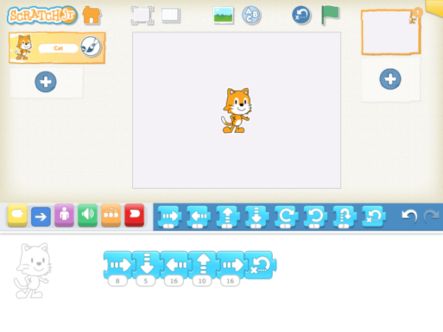


          <p><strong>Discussion</strong> (5-10 minutes):</p>


          <p>What is a programmer? (The person who makes the apps that everyone else plays)</p>


          <p>What other iPad Apps have you used? (LetterSchool, MathBlaster, AngryBirds, etc)</p>


          <p>How is ScratchJr different from other apps that you have used? (in ScratchJr, you make up the games and the stories)</p>


          <p>Note: Students who have used other iPad Apps may be expecting to be told how to &ldquo;play the game.&rdquo; It will take a few sessions for students to understand that with
          ScratchJr, they make the game, or they tell the story, and it can be any game or any story they choose.</p>

          <div class="page-break"></div>


          <p><strong>Mechanics</strong> - Using the ScratchJr Interface (5-10 minutes). See &ldquo;Character Animation Using the ScratchJr Blocks&rdquo; tutorial video at
          ScratchJr.org.</p>

          <ol>
            <li>
              From the Home screen:
              <ul>
                <li>
                  Make a new project
                </li>
              </ul>
            </li>
            <li>
              From the main interface screen:
              <ul>
                <li>
                  Show the Stage
                </li>
                <li>
                  Show the Programming Area
                </li>
                <li>
                  Show how to drag blocks to the Programming Area
                </li>
                <li>
                  Tap on blocks in the Programming Area to show how the cat moves on the stage
                </li>
                <li>
                  Show how to change the number on a block to move multiple times
                </li>
                <li>
                  Show how to snap blocks together to make a sequence of moves
                </li>
                <li>
                  Show how to return the character to its starting position with either the blue movement block or the Reset button above the stage. This is important because the students will need to reset their character’s position after each attempt at figuring out the programming challenge.
                </li>

              </ul>
            </li>
          </ol>


          <p><strong>Self-directed work</strong> (20 minutes):</p>


          <p>Using the blue movement blocks, make the cat travel to all four corners of the stage.</p>


          <p>If you want a story to go with the activity, you could say that the cat is new to the playground and wants to look all around by visiting all four corners.</p>


          <p>Make sure students know how to press the reset button to return the cat to its starting position when running the script multiple times (or put a reset block at the end of
          the script).</p>


          <p>Students who complete the task may explore other areas of ScratchJr on their own.</p>


          <p>Here is a script that will work for this exercise, if you start the character in the middle of the stage:</p>


          <p>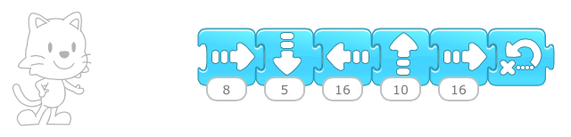</p>

          <div class="page-break"></div>


          <p><strong>Wrap-up</strong> (5-10 minutes):</p>


          <p>Ask students who completed the task to show their projects to the class and explain what they did. This works best if you can connect individual ipads to a projector.</p>


          <p class="dot-separater mod-page-break-after"><strong>● ● ● ● ● ● ● ● ● ● ● ● ● ● ● ● ● ● ● ● ● ● ● ● ● ● ● ● ● ● ● ● ● ● ● ● ● ● ● ● ● ● ● ● ● ● ● ●</strong>
          </p>
          <strong><br></strong>

          <p id="lesson2"><strong>Lesson 2: Backgrounds and Start on Green Flag Triggering Block</strong>
          </p>


          <p>In this lesson, students will learn how to select a background for their project and how to use the Start on Green Flag triggering block to give starting conditions for their
          scripts. They will learn that the Green Flag button will also reset the character&rsquo;s starting position. They will also learn that scripts can run concurrently.</p>


          <p>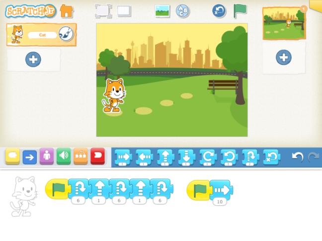</p>


          <p><strong>Discussion</strong> (5-10 minutes):</p>


          <p>If you tap on a script, it will run. But what if you want two scripts to run at the same time? (Notice the green flag at the top of the screen, and the yellow triggering
          blocks.)</p>


          <p>What can you do with two scripts running at the same time that you can&rsquo;t do with only one script running?</p>


          <p>(Do two separate motions at the same time, such as Move Right and Move Up, which will cause the character to travel in a diagonal line, or move while playing a sound.)</p>


          <p>After you run a script, you will probably want your character to return to its starting position so that next time you run the script, the character will do the same thing,
          in the same place on the screen. The green flag will do this for you. So will the reset button at the top of the screen and also the blue reset block if you put it at the end or
          beginning of a script.</p>

          <div class="page-break"></div>


          <p><strong>Mechanics</strong> &ndash; Backgrounds, Yellow Blocks, and the Green Flag Button (5-10 minutes).</p>


          <p>1. Add a background to your project:</p>


          <p>&middot; Tap on the Background icon.</p>


          <p>&middot; Select the desired background</p>


          <p>&middot; Tap the check mark to continue.</p>


          <p>2. Review motion blocks:</p>


          <p>&middot; Drag some blue blocks to the programming area.</p>


          <p>&middot; Snap them together to make a script</p>


          <p>&middot; Tap on the script to see the cat move.</p>


          <p>&middot; For the &ldquo;turn right&rdquo; block, see if students can figure out how many turns will make a full circle (Answer:
          12). They will need this for the cartwheel exercise.</p>


          <p>3. Show how to use the Green Flag triggering block:</p>


          <p>&middot; Tap on the yellow block to reveal the triggering blocks in the palette.</p>


          <p>&middot; Drag the &ldquo;Start on Flag&rdquo; block to the programming area and snap it onto the script.</p>


          <p>&middot; Tap on the Green Flag at the top of the screen to show how the cat moves.</p>


          <p>&middot; Show the difference between tapping on the Green Flag button and tapping on the script in the programming area. (The Green
          Flag button will first reset the character to its starting position and then run the script. Tapping on the script will only run the script.)</p>

          <div class="page-break"></div>


          <p><strong>Self-directed work</strong> (20 minutes):</p>


          <p>1. Make the cat walk diagonally. (You will need two scripts for this, each starting with a Green Flag)</p>


          <p>2. Have the cat do a cartwheel. (Use the turn block and the forward movement in two different scripts)</p>


          <p>3. Using the &ldquo;Park&rdquo; background, position the cat on the first stepping stone. See if you can get the cat to hop on the
          remaining 3 stepping stones by pressing the green flag only once. (You will need a combination of jump and upward movement blocks in one script, and regular forward movement in
          a second script.)</p>


          <p>Here are scripts that will work for these exercises.</p>


          <p>1. Diagonal walking:</p>


          <p>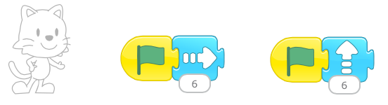</p>


          <p>2. Cartwheel:</p>


          <p>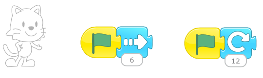</p>


          <p>3. Hop on stepping stones:</p>


          <p><strong>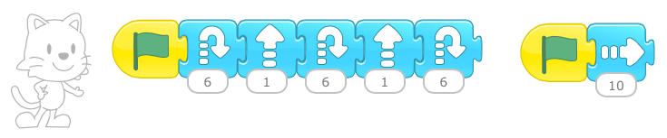</strong>
          </p>


          <p><strong>Wrap-up</strong> (5-10 minutes):</p>


          <p>Ask a student who completed a task to show his or her project to the class. Do this for all three tasks.</p>


          <p class="dot-separater mod-page-break-after no-print"><strong>● ● ● ● ● ● ● ● ● ● ● ● ● ● ● ● ● ● ● ● ● ● ● ● ● ● ● ● ● ● ● ● ● ● ● ● ● ● ● ● ● ● ● ● ● ● ● ●</strong>
          </p>
          <strong><br></strong>

          <p id="lesson3"><strong>Lesson 3: New Characters and Start on Tap Triggering Block</strong>
          </p>


          <p>In this lesson, students will add multiple characters to their projects and learn how to use the Start on Tap triggering block. They will see how scripts are attached to
          characters so that when a character is deleted, the script disappears with the character.</p>


          <p>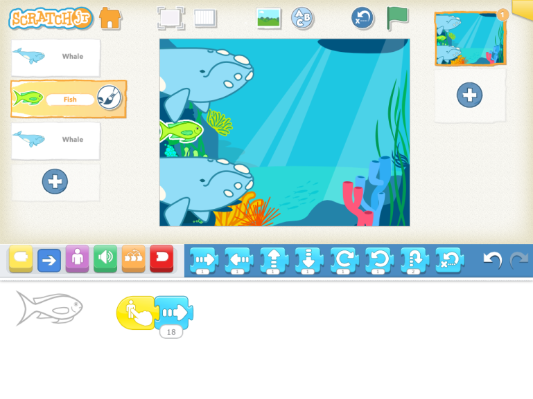</p>


          <p><strong>Discussion</strong> (5-10 minutes):</p>


          <p>Compare a staged play to ScratchJr. Each character in a play reads his or her own lines from a script. ScratchJr works in a similar way. A ScratchJr project consists of a
          separate set of instructions for each character to follow. Just as characters in a play read only their own lines, characters in a ScratchJr project perform only their own
          instructions.</p>

          <div class="page-break"></div>

          <p>As we learned in the previous lesson, we can trigger action with the Green Flag. If we tap the green flag at the top of the screen, the character will reset its position
          before it runs the script. When we have multiple characters, the Green Flag will trigger action in all the characters whose scripts begin with a green flag, all at the same
          time. It will also reset the positions of all those characters before running their scripts. When you have multiple characters whose scripts all start with a green flag
          triggering block, you can see a big difference between tapping on the green flag in the script area and tapping on the green flag at the top of the screen.</p>


          <p>In this lesson we will also trigger action by tapping on the character itself. When we have multiple characters on the screen, tapping on a character will trigger only that
          particular character&rsquo;s script, even if there are other characters with the Start on Tap triggering block. Each of those characters will run their scripts only when we tap
          on them individually.</p>


          <p><strong>Mechanics</strong> (5-10 minutes) &ndash;</p>


          <p>1. Add a character by tapping the plus sign on the left.</p>


          <p>2. Delete a character by long pressing a character (press and hold), either on the stage or in the list of characters.</p>


          <p>3. Add scripts to a character. Tap another character in the list and show how those scripts are no longer visible, since each
          character has its own scripts.</p>


          <p>4. Show how to copy a script from one character to another (drag it from the programming area to the character area).</p>


          <p>5. If you work hard on a script and then decide you want to change the character, keep in mind that if you delete the character and
          add a new one, you will lose your script as well. To avoid this, you can add the new character that you want, then drag your script to the new character to copy it, and then
          delete the character that you don&rsquo;t want anymore.</p>


          <p>6. Show how Start on Tap works. Note: Many children will have difficulty tapping on a character without moving it. They will think
          that the script is not working. In fact, if you move a character while trying to tap on it, the script will not run. To get the script to run, you have to tap on a character
          without moving it.</p>

          <div class="page-break"></div>

          <p><strong>Self-directed work</strong> (20 minutes):</p>


          <p>Create the Sharks and Minnows game, or Fishy Fishy Cross My Ocean, in ScratchJr. You can use the whale character in place of a shark. Make several sharks and one minnow.
          Program the sharks to respond to a flag and the minnow to respond to a tap. Notice that you will be able to get multiple sharks to move across the screen with the green flag,
          but you will only be able to get one minnow at a time to move with a tap.</p>


          <p>Here are scripts that will work for this project:</p>


          <p>Minnow script: Shark script:</p>


          <p>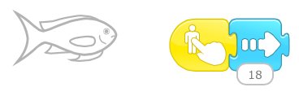 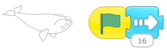</p>


          <p><strong>Wrap-up</strong> (5-10 minutes):</p>


          <p>Ask a few students show their projects to the class. Try to select students who have projects that look different from each other.</p>


          <p class="dot-separater mod-page-break-after"><strong>● ● ● ● ● ● ● ● ● ● ● ● ● ● ● ● ● ● ● ● ● ● ● ● ● ● ● ● ● ● ● ● ● ● ● ● ● ● ● ● ● ● ● ● ● ● ● ●</strong>
          </p>
          <strong><br></strong>

          <p id="lesson4"><strong>Lesson 4: Recording Sound, and Using the Wait and Speed Blocks</strong>
          </p>


          <p>In this lesson, students will learn how to record sound and play it back while the character is moving. The students will also attempt to time the character&rsquo;s movement
          to the music.</p>


          <p>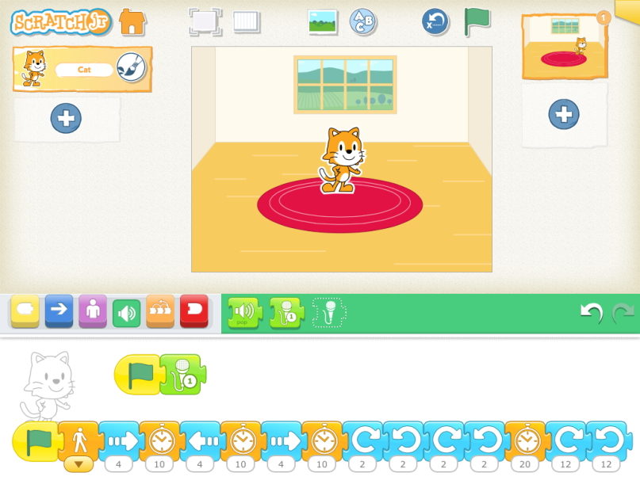</p>

          <div class="page-break"></div>

          <p><strong>Discussion</strong> (5-10 minutes):</p>


          <p>The purple Say block will give the character a speech bubble with any text you choose. But pre-literate children will find the green Record block much more useful. You can
          record anything you want, and play back in a script.</p>


          <p>If you give a character motion as well as sound, both starting on a Green Flag trigger, the motion and sound will happen at the same time.</p>


          <p>If you want to time the motion with the sound, you can speed up or slow down the character with the Speed block, and you can use the Wait block to pause between motions to
          slow the script down further.</p>


          <p><strong>Mechanics</strong> (5-10 minutes) &ndash;</p>


          <p>1. Introduce sound</p>


          <p>&middot; Tap on the green button to reveal the sound palette.</p>


          <p>&middot; Show how a character can play the &ldquo;pop&rdquo; sound.</p>


          <p>&middot; Show how to record a new sound.</p>


          <p>2. Set up Green Flag triggers</p>


          <p>&middot; Give the sound a green flag triggering block.</p>


          <p>&middot; Make another script for movement and give it a green triggering block as well.</p>


          <p>&middot; Show how the green flag at the top of the screen triggers both the character&rsquo;s movement and its sound at the same
          time.</p>


          <p>3. Adjust the timing of the action</p>


          <p>&middot; Insert Wait blocks in between the motion blocks to pause the movement.</p>


          <p>&middot; Insert a Speed block at the beginning of the script to show how it affects the motion in the entire script.</p>


        </div>

        <div class="page-break"></div>

        <p><strong>Self-directed work</strong> (20 minutes):</p>


        <p>Program a character to dance the Hokey Pokey in time to the song. You will have to record yourself singing the song and have it start on a Green Flag. Then make the character
        move according to the motions in the song by inserting wait blocks or changing the speed.</p>


        <p>Here is a sample script for the hokey pokey. Your pauses may vary from this script, depending on how quickly or slowly you sing the Hokey Pokey in your recording.</p>


        <p>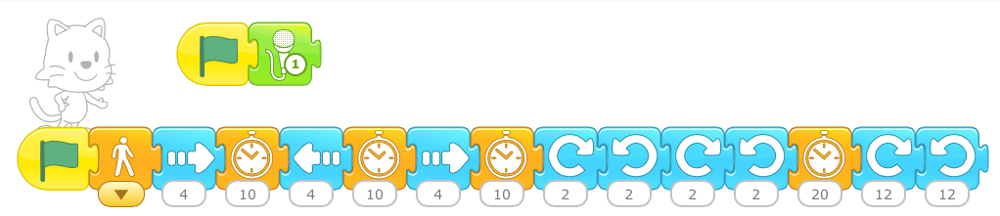</p>


        <p><strong>Wrap-up</strong> (5-10 minutes):</p>


        <p>Ask a few students show their projects to the class. Try to select students who have successfully timed their character to dance according to the motions in the Hokey Pokey
        song.</p>


        <p class="dot-separater mod-page-break-after"><strong>● ● ● ● ● ● ● ● ● ● ● ● ● ● ● ● ● ● ● ● ● ● ● ● ● ● ● ● ● ● ● ● ● ● ● ● ● ● ● ● ● ● ● ● ● ● ● ●</strong>
        </p>


        <p>
        </p>


        <p id="lesson5"><strong>Lesson 5: Simple Character Interaction Using Start on Bump</strong>
        </p>


        <p>In this lesson, students will see the simplest way that one character can trigger action for another character.</p>


        <p>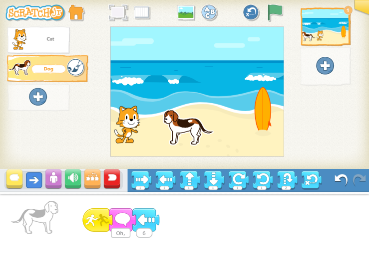</p>


        <p><strong>Discussion</strong> (5-10 minutes):</p>


        <p>Until this lesson, the characters that we have programmed in ScratchJr were independent from each other. That is, one character&rsquo;s actions had no effect on any other
        character. However, when telling a story, it is usually necessary to have characters interact with each other. Since scripts belong to each character separately, it is not
        possible to control a second character from one character&rsquo;s script. However, it is possible for one character to trigger another character&rsquo;s script. There are several
        blocks in the yellow Triggering Blocks palette to use for this. The simplest of them is Start on Bump.</p>

        <div class="page-break"></div>

        <p>Start on Bump will start a character&rsquo;s script only when another character on the stage runs into it. Any character can trigger the script. With Start on Bump, it is not
        possible to specify which character will trigger the script.</p>


        <p>Note the difference between Start on Bump and Start on Tap. Only a real human person can trigger a script that starts with a Start on Tap block, and only a ScratchJr character
        can trigger a script that starts with a Start on Bump block.</p>


        <p><strong>Mechanics</strong> (5 minutes) &ndash;</p>


        <p>1. Add a new character</p>


        <p>2. Have one character start moving with the Flag trigger.</p>


        <p>3. Make the second character move or do another action with the Start on Tap trigger. (When the first character reaches the second
        character, the second character will start moving.)</p>


        <p><strong>Self-directed work</strong> (20 minutes):</p>


        <p>Create a tag game, where a character will say that it&rsquo;s tagged when another character runs into it (you can use the green Sound block for this, or the purple Say
        block).</p>

        <div class="page-break"></div>

        <p>Here are scripts that will work for this project:</p>


        <p>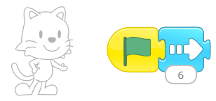</p>


        <p>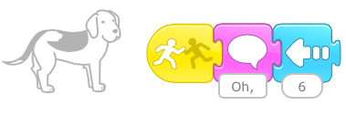</p>


        <p><strong>Wrap-up</strong> (5-10 minutes):</p>


        <p>Ask a few students show their projects to the class. Try to select students who have projects that look different from each other.</p>


        <p class="dot-separater mod-page-break-after"><strong>● ● ● ● ● ● ● ● ● ● ● ● ● ● ● ● ● ● ● ● ● ● ● ● ● ● ● ● ● ● ● ● ● ● ● ● ● ● ● ● ● ● ● ● ● ● ● ●</strong>
        </p>


        <p>
        </p>


        <p id="lesson6"><strong>Lesson 6: Message Trigger and Stop Block</strong>
        </p>


        <p>In this lesson, students will see a more predicable way for one character to trigger action for one or multiple other characters.</p>


        <p>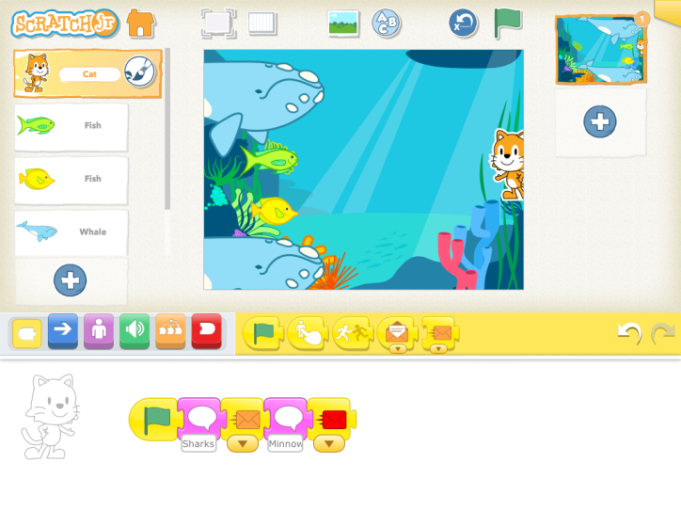 OR 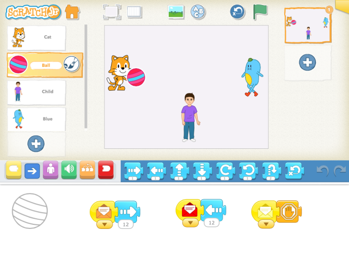</p>


        <p><strong>Discussion</strong> (5-10 minutes):</p>


        <p>We used the Start on Bump block to have one character trigger action in another character, but that arrangement would trigger action in a character no matter which character
        ran into it. If we want a character&rsquo;s script to be triggered by a specific character, we need to use the message block. The message block is color coded so that the sender
        and the receiver need to be referring to the same color.</p>


        <p>Because the message block has 6 possible colors, we can make 6 different connections between characters. Thus, we can use the message block for sequential activity across
        characters. The first character to act would send a message of one color which the second character to act would be listening for. Then the second character would do its movement
        and send a different colored message, which a third character (or the original character, in the case of a conversation or other back and forth sequence across characters) would
        be listening for, and so on.</p>


        <p>The character that sends the message can be thought of as a radio broadcaster. The broadcaster sends its message on a particular color-coded &ldquo;channel.&rdquo; If another
        character is tuned to the same channel on this imaginary radio, it will hear the message and act on it. But characters that are tuned to different channels (i.e., listening for
        messages of another color) will not hear that message at all. Instead, they will only hear broadcasts for the color &ldquo;channels&rdquo; that they are listening to. A character
        can send and listen for messages of multiple colors.</p>


        <p><strong>Mechanics</strong> (5 minutes):</p>


        <p>When you want a character to trigger action for another character, put a Send Start Message block in its script and select a color. Then, in the script of the other character
        or characters, put a Start on Message triggering block. Make sure the color matches the color that was sent. Show how the stop block works so that students can stop the action
        once a character is caught.</p>

        <div class="page-break"></div>

        <p><strong>Self-directed work</strong> (20 minutes):</p>


        <p><u>Option 1</u>
        </p>


        <p>Redo the Sharks and Minnows game as follows:</p>


        <p>1. Add more minnows and give them a Start on Message trigger of one color. Give all minnows the same color message trigger
        block.</p>


        <p>2. Change the trigger block of the existing sharks from Start on Flag to Start on Message, and pick a different color message block
        for them that what you picked for the minnows. Give all sharks the same color message trigger block.</p>


        <p>3. Add a character (other than a shark or a minnow) to call the sharks and minnows by sending a message of the color that the
        minnows and then the sharks are listening for (or vice versa).</p>


        <p>Here are scripts that will work for this project:</p>


        <p><strong>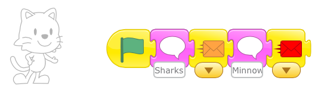</strong>
        </p>


        <p><strong>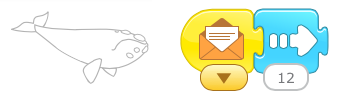</strong>
        </p>


        <p><strong></strong>
        </p>

        <div class="page-break"></div>

        <p><u>Option 2</u>
        </p>


        <p>Make a game of Monkey in the Middle. You will need a ball and 3 other characters. Two characters will be tossing the ball to each other, and when the third character catches
        the ball, the game stops. Students will need to know how the Stop block works for this project.</p>


        <p>Here are sample scripts for that game.</p>


        <p>1. Throwing/catching characters:</p>


        <p>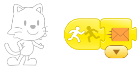 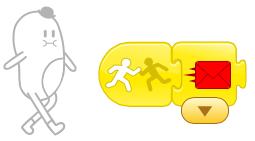</p>


        <p>2. Middle character</p>


        <p>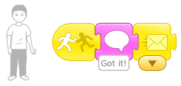</p>


        <p>3. Ball</p>


        <p></p>


        <p><strong>Wrap-up</strong> (5-10 minutes):</p>


        <p>Ask a few students show their projects to the class.</p>


        <p class="dot-separater mod-page-break-after"><strong>● ● ● ● ● ● ● ● ● ● ● ● ● ● ● ● ● ● ● ● ● ● ● ● ● ● ● ● ● ● ● ● ● ● ● ● ● ● ● ● ● ● ● ● ● ● ● ●</strong>
        </p>


        <p>
        </p>


        <p id="lesson7"><strong>Lesson 7: New Pages</strong>
        </p>


        <p>In this lesson, students will learn how to make new pages for their ScratchJr stories. This feature is useful for projects that have multiple scenes. Each page has its own
        background, characters, and scripts.</p>


        <p>&nbsp;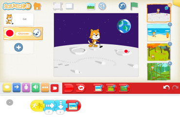&nbsp;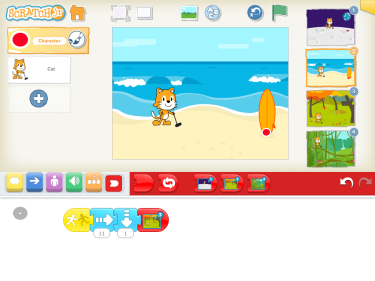&nbsp;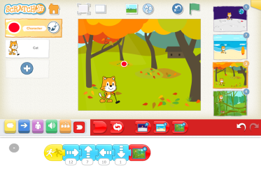&nbsp;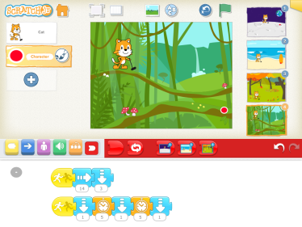</p>


        <p><strong>Discussion</strong> (5-10 minutes):</p>


        <p>Think of a storybook with multiple pages. If a character goes from home to school, one page might show the character in his or her bedroom at home, and the next page might
        show the character in his or her classroom at school. Or, if you want the characters to move to a new position on the same background without seeing the intermediate movement,
        you can switch to a new page.</p>


        <p>You could also go to a second page to make it seem as if a character in your story appeared or disappeared at once. You could use the Appear and Disappear blocks for this.
        These blocks will work well in some cases, such as when a caterpillar turns into a butterfly, or when a frog turns into a prince. But if you want several characters to appear or
        disappear at the same time, you will need to switch to a different scene.</p>


        <p><strong>Mechanics</strong> &ndash;</p>


        <p>1. Making a New Page and Adding or Copying Characters to it (5-10 minutes):</p>


        <p>&middot; Tap on the plus sign on the right hand side of the screen to make a new page.</p>


        <p>&middot; Go back to the previous page and drag existing characters to the new page to copy them.</p>


        <p>&middot; Tap on the new page to select it, and add additional characters.</p>


        <p>&middot; Switch to a new page in a program with the dedicated red end block.</p>


        <p>&middot; Reorder pages by dragging them to another position in the sequence of pages.</p>

        <div class="page-break"></div>

        <p>2. Edit a character to draw a golf club</p>


        <p>&middot; Tap the paintbrush on the cat character to get to the paint editor.</p>


        <p>&middot; Select the line drawing tool and draw the golf club in the cat&rsquo;s hand.</p>


        <p><strong>Self-Directed Work</strong> (20 minutes):</p>


        <p>Make a game of miniature golf, where each page is a new challenge in the course.</p>


        <p>Or, continue the game of Monkey in the Middle or Sharks and Minnows by showing on a second page how the characters change places when one of the players from the first page is
        caught or catches the ball. In the Monkey in the Middle game, you could add branching by going to two different pages, depending on which of the side characters threw the ball
        when it was caught.</p>


        <p>Here are scripts that will work for the mini-golf project.</p>


        <p>The cat script gets copied to every page:</p>


        <p>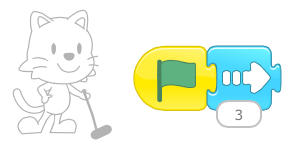</p>


        <p>The script for the ball is different on each page, depending on where you want the ball to travel.</p>


        <p>On the moon background, we wanted the ball to go into a crater:</p>


        <p>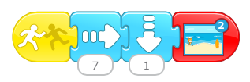 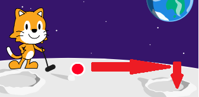</p>

        <div class="page-break"></div>

        <p>On the beach background, we wanted the ball to bounce off the surfboard and land at its base:</p>


        <p>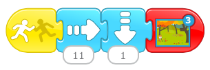 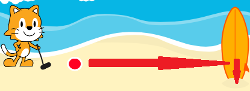</p>


        <p>On the orchard background, we wanted the ball to bounce off a few trees and the barn:</p>


        <p>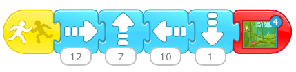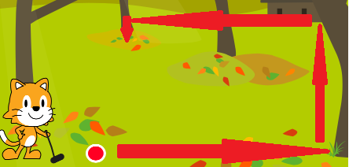</p>


        <p>And finally, on the jungle background, we wanted to ball to travel on the upper vine and then hit the mushroom and fall down to the vine below:</p>

        <div class="page-break"></div>

        <p>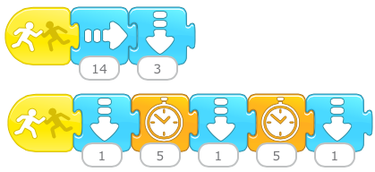 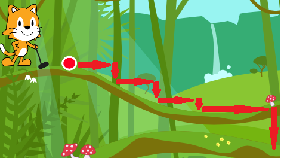</p>


        <p><strong>Wrap-up</strong> (5-10 minutes):</p>


        <p>Ask students who completed 3 or 4 pages to show their projects to the class and explain what they did. See if anyone changed the order of their pages and ask them to explain
        why and how they did that.</p>


        <p class="dot-separater mod-page-break-after"><strong>● ● ● ● ● ● ● ● ● ● ● ● ● ● ● ● ● ● ● ● ● ● ● ● ● ● ● ● ● ● ● ● ● ● ● ● ● ● ● ● ● ● ● ● ● ● ● ●</strong>
        </p>


        <p>
        </p>


        <p id="lesson8"><strong>Lesson 8: The Paint Editor</strong>
        </p>


        <p>ScratchJr incorporates an extremely powerful paint editor. We used it briefly in the previous lesson, and your students probably discovered it way before that. This lesson
        covers the less obvious features of the paint editor.</p>


        <p><strong>Discussion</strong> (1 minute):</p>


        <p>ScratchJr provides a set of characters and backgrounds for your stories, but it is likely that you have a story to tell that uses different characters and backgrounds. In this
        case, you will need the paint editor.</p>


        <p><strong>Mechanics</strong> (10 minutes):</p>


        <p>1. Tap on a brush icon to get to the paint editor. Depending on where the brush is when you tap it, you may either edit an existing
        character or background or create a new character or background.</p>


        <p>2. To use the shape tools, drag your finger diagonally on the screen. The place that your finger first lands will be the anchor
        point of the shape, and its size will be determined by how far you drag.</p>


        <p>3. The undo and redo buttons will step through any number of increments to your drawing.</p>


        <p>4. Use the paint bucket tool to fill in your shapes with a solid color. Select the paint bucket and a color, and then select the
        shape you want to fill.</p>


        <p>5. Use the scissors tool to delete shapes from your drawing. Select the scissors and then select the shape you want to delete.</p>


        <p>6. Use the rubber stamp tool to copy a shape. When you tap on the rubber stamp and then tap on a shape, you will get a movable
        duplicate of the shape, on top of the original shape, offset just a bit.</p>


        <p>7. You can move any shape by selecting the arrow and then dragging a shape.</p>


        <p>8. You can change an existing shape with the arrow tool as well. After you select the arrow, if you tap on a shape instead of
        dragging it, you will see white circles at juncture points in your shape&rsquo;s outline. You can drag these circles to change your shape.</p>


        <p>9. The rotate tool will rotate a shape on its axis. Select the rotate tool and then select a shape. Drag your finger in a circle
        until you reach the desired position for your shape.</p>

        <div class="page-break"></div>

        <p>10. And finally, everyone&rsquo;s favorite tool: the camera. Select the camera tool and then select a shape that the camera will
        fill. Whatever photo you then take with the camera will be cropped into the shape. For this reason, the ScratchJr character library includes a set of characters with blank faces.
        To put your face into those characters you need to edit the character and select the blank face as the shape for the camera to fill.</p>


        <p><strong>Self-Directed Work</strong> (20-25 minutes):</p>


        <p>Make a project of your choice: experiment with the camera; modify an existing character and/or paint a new character; modify an existing background and/or paint a new
        background.</p>


        <p><strong>Wrap-up</strong> (10 minutes):</p>


        <p>Most likely, you will be able to choose from a lot of interesting and unique projects for share time.</p>


        <p class="dot-separater"><strong>● ● ● ● ● ● ● ● ● ● ● ● ● ● ● ● ● ● ● ● ● ● ● ● ● ● ● ● ● ● ● ● ● ● ● ● ● ● ● ● ● ● ● ● ● ● ● ●</strong>
        </p>
      </div>
    </div>
  </div>
</div>
